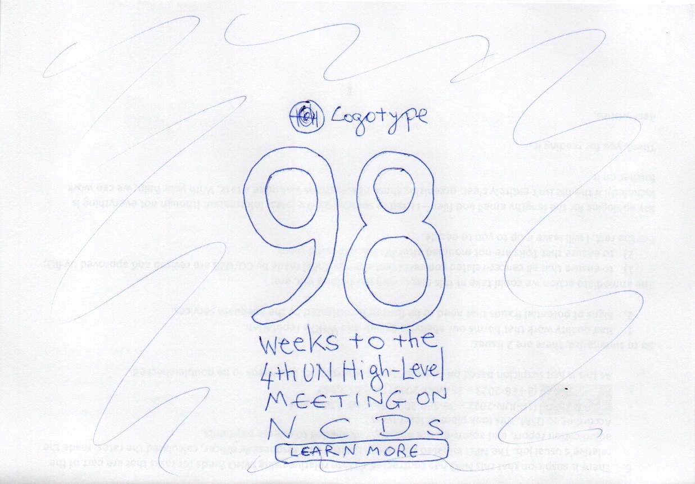

One-Hundred-Week Banner
This banner was my first experience of the power of Large Language Models—I believe it was GPT 3 at the time—to generate working code from a hand-drawn sketch. Here is the input I gave it, together with a prompt asking it to produce a `p5.js` sketch following the design.
In late 2023, I vibe-coded (the term did not exist at the time) a Processing sketch to serve as a public banner during webinars. I used it to remind participants that the time to the Fourth UN High Level Meeting on NCDs and Mental Health was growing short and that we had a lot to do before then.
I set up this banner when the count was 100, hence the name, but I publish this post when the number has dwindled to six.
The countdown became almost a marker of my own journey to retirement and life after WHO. I will keep this code repository running and switch the label to mark weeks beyond the High Level Meeting—a tiny voice, a reminder, and a conscience-prick to policy-makers and politicians—I assume they have consciences—mutely asking them to accelerate work on their commitments to 2030.
Here's the Github repo and, in an iframe below, the banner itself, more a reminder now than a call to action.